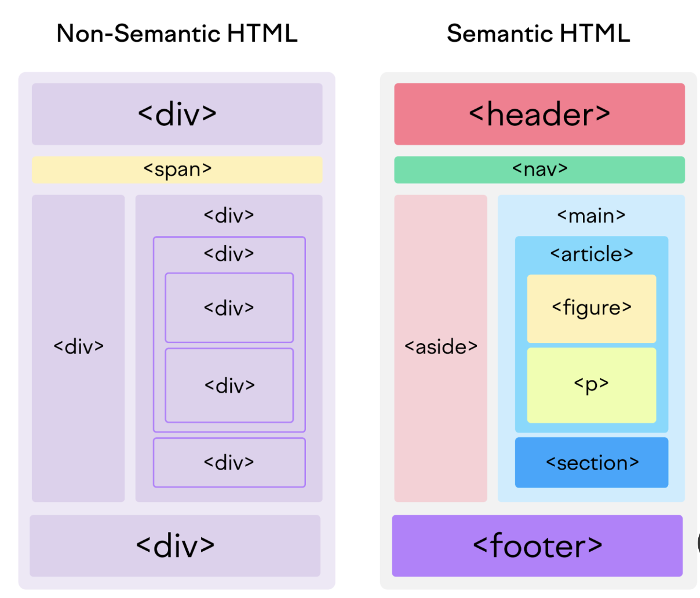
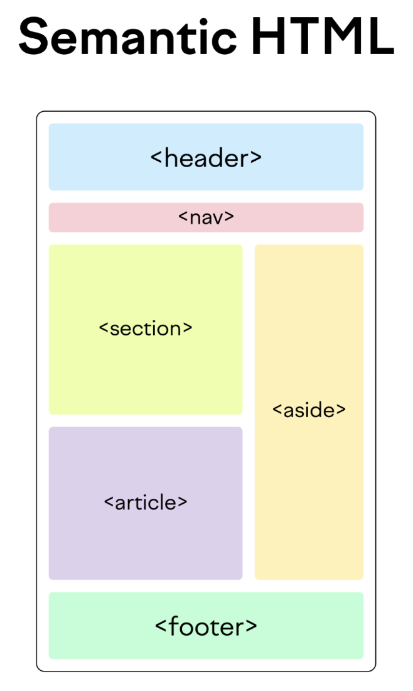
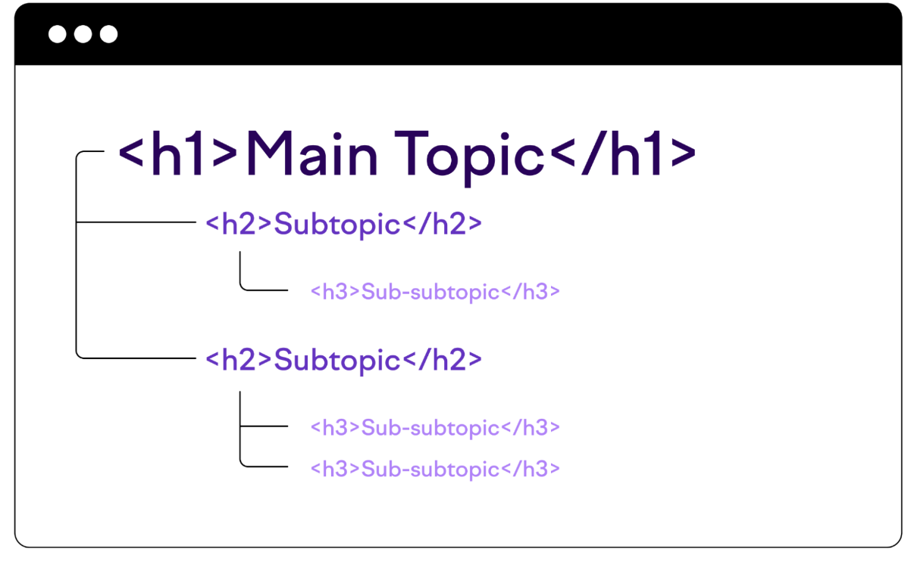
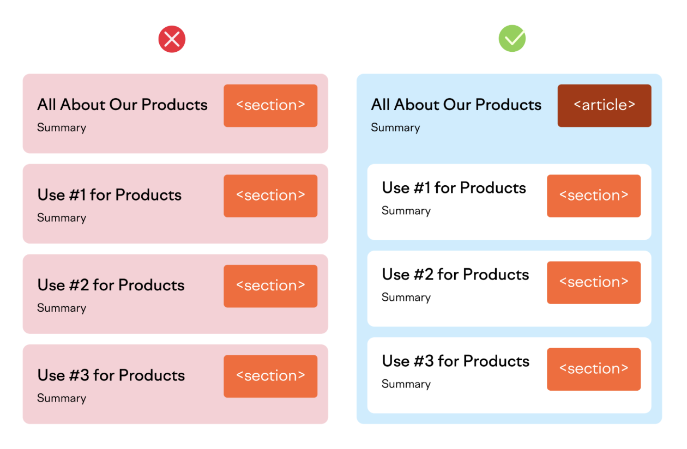

Semantic HTML: What It Is and How to Use It Correctly
Semantic HTML
- Also known as semantic markup.
- Refers to use of those HTML tags which convey meaning of the content contained within them which helps to
define the roles and importance of the different parts of web page.

Why we need Symantic HTML tags?
- Accessibility: Sighted users can see headers, footers etc. Of webpage but blind users can’t, so it helps in
their screen readers to communicate the webpage content properly.
- SEO: These tags are important for SEO because they indicate the role of content within the tags. This
information gives search engine crawlers, like Googlebot, a better understanding of content. This increases
the chances that your content will be selected as candidate for the search engine results page (SERP) for
relevant keywords.
Types of HTML Semantic tags
Semantic tags for Structure
- Communicates the layout of page.
- Introduced when HTML4 upgraded to HTML5, So also known as Semantic HTML5 tags.

-
<header>: Introduces the content of a page or section, like a title or logo.
<nav>: Defines navigation links for the webpage.
<main>: Contains the central content of the webpage. There should only be one per page.
<article>: Represents self-contained content, like a blog post or news article.
<section>: Groups related content together, but it's not necessarily independent.
<aside>: Defines supplementary content, often used for sidebars.
<footer>: Appears at the bottom of the webpage and contains information like copyright and contact
details.
Semantic tags for Text
Headings: <h1> for the main heading, <h2> to <h6> for subheadings (use <h2> most
often).
Paragraph: <p> for a block of text.
Link: <a> to create hyperlinks to other pages.
Lists: <ol> for ordered lists with numbers, <ul> for unordered lists with bullets.
Quotations: <blockquote> for long quotes, <q> for short inline quotes.
Emphasis: <em> for regular emphasis, <strong> for strong emphasis.
Code: <code> to display computer code.
There are many more semantic tags available to add meaning to our content. <summary>, <time>,
<address>, <video>, etc.
Best Practices
- Use semantic tags for meaning, not style: Don't misuse tags like <h1>
for larger font or <blockquote>
for
indentation. Use CSS for styling.
- Nest headings logically: Headings (H1-H6) should reflect content hierarchy. H3 under H2 indicates a subtopic
of H2.

<h1>Main Topic</h1>
<h2>Subtopic 1</h2>
<p>Content for Subtopic 1</p>
<h2>Subtopic 2</h2>
<p>Content for Subtopic 2</p>
<h2>Subtopic 3</h2>
<p>Content for Subtopic 3</p>
The same advice—nesting tags by their meaning—applies to all the other semantic HTML tags.
Your HTML implementation shouldn’t be a mere duplicate of the visual layout. Instead, it should follow the
semantic structure of the page.
